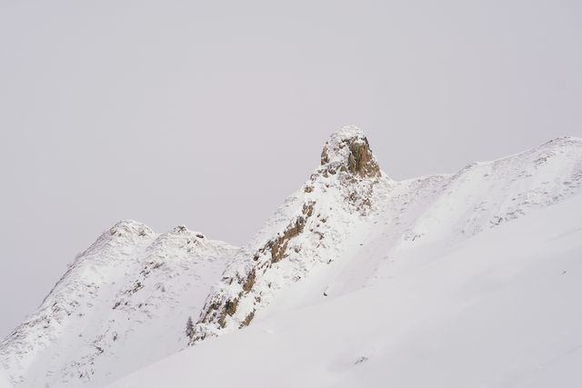

Ski resorts in the Pyrenees
From the Cerdagne sunshine to the big ski areas of the Hautes-Pyrénées: resorts often cheaper than the Alps, two hours from Toulouse.
Photo: Oihan Brière / Unsplash
The French Pyrenees have around forty ski resorts between the Atlantic and the Mediterranean. The biggest, such as Saint-Lary and the Grand Tourmalet, have more than 100 kilometres of runs, and lift passes are often more affordable than in the big Alpine resorts.
For the 2026-2027 season, Cauterets is among the first to open, on 27 November, followed by Font-Romeu and Saint-Lary on 4 December, the Grand Tourmalet on 5 December and Peyragudes on 12 December. Each guide gives the dates, access by train or car, and our tips.
Ski resorts
-
 Font-Romeu
Font-RomeuThe sunniest plateau in the Pyrenees, reached by the Little Yellow Train. Font-Romeu opens on 4 December 2026.
-
 Saint-Lary
Saint-LaryA village in the Aure valley with 100 km of runs above it. Saint-Lary opens on 4 December 2026.
-
 Grand Tourmalet
Grand TourmaletLa Mongie, Barèges and the Pic du Midi, linked by the slopes. The Grand Tourmalet opens on 5 December 2026.
-
 Cauterets
CauteretsA snow-sure cirque above a spa town. Cauterets opens as early as 27 November 2026.
-

PeyragudesTwo linked sides, the 007 run and a gondola from Loudenvielle. Peyragudes opens on 12 December 2026.